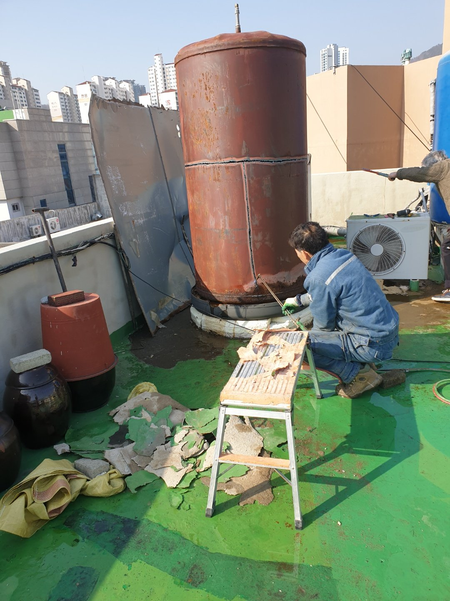

옥상 심야보일러, 분할 철거부터 반출·정리까지
사용하지 않는 옥상 심야보일러를 철거한 현장입니다. 보온재를 제거한 뒤 무거운 보일러 본체를 운반 가능한 크기로 나누어 해체했습니다. 이후 사다리차를 이용해 철거 부재와 폐기물을 내려보내고, 현장 청소로 작업을 마무리했습니다.

작업 흐름
보온재 제거 → 본체 분할 해체 → 사다리차 반출 → 현장 정리
보온재 제거 → 본체 분할 해체 → 사다리차 반출 → 현장 정리
상가·내부 철거부터 원상복구, 보일러·구조물 철거와 폐기물 정리까지. 현장 조건에 맞는 작업 범위와 견적을 상담합니다.
📍 부산 · 양산 · 김해 · 경남 어디든 신속 출장
사직동 본점을 거점으로 부산·양산·김해 및 경남 전 지역 현장을 직접 방문합니다.

공간과 구조물, 현장 조건에 맞춰 작업 가능 여부와 범위를 안내합니다.
식당, 카페, 사무실, 학원 등 상가와 실내 공간의 가벽·천장·바닥 철거 작업을 상담합니다.
계약 만료 및 퇴거·이전 시 건물 관리 기준에 맞춘 깔끔한 철거와 원상복구를 진행합니다.
심야보일러, 옥상 구조물, 학교·운동장 시설물 등 노후 설비와 구조물의 안전한 해체·철거를 상담합니다.
현장의 구조와 차량 진입 조건을 확인한 뒤 지하주차장 구조물 및 바닥 파쇄·철거 범위를 상담합니다.
철거 잔재물, 인테리어·건설 폐기물, 사업장 대량 폐기물, 가정집 생활폐기물 및 유품정리 반출을 상담합니다.
작은 구조물부터 대형 현장까지, 부산·양산·김해 및 경남 어디든 현장 사진과 위치를 알려주시면 신속히 안내해 드립니다.
대봉개발이 직접 시공한 현장 이야기입니다.
사용하지 않는 옥상 심야보일러를 철거한 현장입니다. 보온재를 제거한 뒤 무거운 보일러 본체를 운반 가능한 크기로 나누어 해체했습니다. 이후 사다리차를 이용해 철거 부재와 폐기물을 내려보내고, 현장 청소로 작업을 마무리했습니다.
부곡동 동현중학교 운동장의 축구골대 2개를 철거한 사례입니다. 그물망을 제거하고 매립된 하부를 굴착한 뒤 골대를 운반 가능한 크기로 절단했습니다. 한쪽 골대에서 확인된 콘크리트 고정부는 추가 장비로 파쇄했으며, 절단 부위를 정리하고 굴착 부위를 흙으로 되메워 마무리했습니다.
사진은 실제 작업 과정의 일부입니다. 반출·청소·되메우기 과정은 제공된 현장 설명을 바탕으로 정리했으며, 위 사진을 최종 완료 사진으로 표시하지 않았습니다.
부산 · 양산 · 김해 및 경남 전 지역의 현장 여건에 맞춘 대봉개발의 세부 작업 안내 및 최신 소식입니다.
공사 후 현장 정리는 단순히 남은 폐기물을 치우는 단계를 넘어 안전과 직결된 과정입니다. 정리 범위를 설정할 때 가장 먼저 확인해야 할 점은 현장에 잔류한 폐기물의 종류입니다. 혼합 폐기물, 지정 폐기물, 재활용 가능 자재 등이 섞여 있는지 확인하고, 분리 배출 계획이 사전에 협의되었는지 점검하시기 바랍니다.
폐기물 처리와 관련된 법적 기준은 현장 상황과 지자체 조례에 따라 다를 수 있습니다. 따라서 배출 신고 의무가 있는지, 사업장 폐기물로 분류되는지 등에 대해 관할 구청의 환경과나 관련 허가 업체에 사전에 문의하여 정확한 처리 절차를 안내받는 것이 바람직합니다.
철거 및 정리 과정에서 석면, 가스 배관, 고압 전기 설비와 같이 전문적인 취급이 필요한 요소가 포함되어 있는지 반드시 확인해야 합니다. 이러한 위험 요소는 일반적인 정리 작업 범위에 포함되지 않으며, 반드시 관련 면허를 보유한 전문 인력이나 기술자의 상담과 시공을 거쳐야 안전사고를 예방할 수 있습니다.
가상 예시로서, 공사 후 정리 범위를 설정할 때는 사전에 '폐기물 반출 경로 확보', '위험물 사전 처리 여부', '공사 마무리 범위(완전 철거인지 인테리어 철거인지)', '현장 내 잔여 자재의 처리 방식' 등을 정리한 체크리스트를 만들어 업체와 공유하는 것이 의사소통 오류를 줄이는 좋은 방법입니다. 세부적인 작업 범위는 계약 단계에서 서면으로 명확히 규정하는 것을 권장합니다.
현장 여건에 따라 작업 범위와 비용은 달라질 수 있습니다. 상담: 010-8535-9787
철거 작업을 시작하기 전, 현장의 전기, 가스, 수도 시설을 확인하는 것은 안전사고를 예방하는 첫 번째 단계입니다. 해당 건물의 계량기 위치를 미리 파악하고, 작업 중 불필요한 누출이나 감전 사고가 발생하지 않도록 설비의 차단 상태를 점검해야 합니다.
전기 시설의 경우, 내부 배선이나 분전반의 상태가 어떠한지 확인하셨나요? 작업 범위 내에 전력 공급이 중단되어야 하는 구간이 있는지, 혹은 작업 도구를 사용하기 위한 임시 전력이 필요한지 사전에 판단하여 전력 공급 업체를 통해 필요한 조치를 취해야 합니다.
가스 시설은 안전과 직결된 매우 중요한 요소입니다. 도시가스나 LPG를 사용하는 환경이라면 가스 배관의 마감 처리가 필수적입니다. 직접 처리하기보다 반드시 관할 도시가스 사업소나 해당 분야의 면허를 보유한 전문 업체에 연락하여 안전한 배관 폐쇄 및 철거 절차를 문의하시기 바랍니다.
수도 시설은 철거 중 발생할 수 있는 누수 피해를 막기 위해 밸브를 확실히 잠그는 것이 중요합니다. 수도 계량기의 위치가 어디인지, 밸브가 정상적으로 작동하는지 미리 확인해 두십시오. 수도 시설 변경이나 철거가 동반되어야 한다면 지자체의 상수도 사업소나 관련 전문 시공사와의 상담을 통해 절차를 확인하시기 바랍니다.
현장 여건에 따라 작업 범위와 비용은 달라질 수 있습니다. 상담: 010-8535-9787
매장 철거를 앞두고 가장 먼저 해야 할 일은 폐기물과 재활용이 가능한 집기를 분류하는 것입니다. 철거 대상이 되는 설비와 주방 기구, 가구 등은 현장 상태에 따라 처리 방식이 달라질 수 있으므로, 어떤 물품을 남기고 처분할지 명확한 목록을 작성하는 것부터 시작하시기 바랍니다.
중고 매입이 가능한 집기가 있는지 먼저 확인하십시오. 상태가 양호한 냉장고나 주방 집기는 전문 매입 업체나 중고 플랫폼을 통해 처리하면 폐기물 배출 비용을 절감하는 데 도움이 됩니다. 이 과정에서 집기의 연식이나 작동 여부를 미리 점검해 두면 상담 시 보다 정확한 정보를 제공할 수 있습니다.
폐기물로 분류해야 하는 대상은 관할 지자체의 조례나 기준에 따라 처리 절차가 다를 수 있습니다. 특히 사업장 폐기물은 가정용 폐기물과 배출 신고 방식이 다르므로, 철거 전 해당 구청의 청소과나 관할 환경부서에 폐기물 배출 신고 절차와 분류 기준을 반드시 확인하시기 바랍니다.
석면이 포함된 자재나 가스 배관, 전기 차단기 등은 일반적인 철거 작업 범위를 넘어설 수 있습니다. 이러한 위험 요소가 포함된 현장인지 사전에 인지하고, 관련 법령에 따른 안전 조치와 전문 자격 보유 업체의 도움이 필요한 상황인지 반드시 전문가와 상담하여 안전하게 절차를 진행하십시오.
현장 여건에 따라 작업 범위와 비용은 달라질 수 있습니다. 상담: 010-8535-9787
철거 공사를 계획할 때 가장 먼저 고려해야 할 요소는 건물 관리규정입니다. 아파트나 오피스텔, 상가 빌딩 등은 각기 다른 관리 규약을 두고 있으며, 특히 공사 가능 시간과 엘리베이터 사용 범위, 사다리차 배치 등에 대해 사전에 관리 사무소와 협의해야 합니다. 입주민의 불편을 최소화하기 위해 공사 일정을 알리는 공고문 부착이 필요한지 확인하십시오.
건물의 구조와 안전을 고려하여 철거 범위를 결정하는 것이 중요합니다. 내부 인테리어 철거인지, 벽체 철거인지에 따라 작업 방식과 소요 시간이 달라집니다. 관할 지방자치단체의 조례나 건물의 용도에 따라 사전에 신고하거나 허가를 받아야 할 항목이 있을 수 있으니, 공사 전 관할 구청이나 담당 공무원에게 필요한 행정 절차를 반드시 문의하시기 바랍니다.
철거 과정에서 발생하는 폐기물 처리 계획을 수립해야 합니다. 폐기물의 종류와 양에 따라 적절한 처리 시설과 운반 방법이 달라질 수 있습니다. 특히 폐기물 처리 시 환경 관련 규정을 준수해야 하므로, 적법한 허가를 받은 폐기물 수집·운반 업체에 의뢰하여 처리하는 것이 바람직합니다. 관련 업체 선정 시 해당 업체가 법규를 준수하는지 확인하십시오.
전기, 가스, 수도 등 시설물은 철거 전 전문가의 점검과 차단 작업이 필수입니다. 특히 가스 배관 철거는 가스 전문 시공 자격을 갖춘 업체가 처리해야 하며, 전기 배선 정리 역시 화재 예방을 위해 철저한 분리가 선행되어야 합니다. 위험 요소가 있는 시설물에 대해서는 임의로 조치하지 마시고 반드시 각 분야의 전문가와 상담하여 안전한 절차를 밟으시길 권장합니다.
현장 여건에 따라 작업 범위와 비용은 달라질 수 있습니다. 상담: 010-8535-9787
가벽 철거를 계획하고 있다면 가장 먼저 해당 벽체가 건물의 구조 안전에 영향을 미치는지 확인해야 합니다. 철거 대상인 벽이 단순히 공간을 나누는 칸막이 벽인지, 건물의 하중을 지탱하는 내력벽인지에 따라 철거 가능 여부가 크게 달라지므로 건축물 대장의 도면을 통해 구조를 우선 파악하시기 바랍니다.
가벽 내부의 배선이나 배관 설비를 점검하는 것도 필수입니다. 벽체 안에 전기 콘센트, 스위치, 조명용 전선, 혹은 난방이나 수도 배관이 매립되어 있을 수 있습니다. 만약 이를 고려하지 않고 철거를 진행하면 전기 단락이나 누수와 같은 심각한 안전사고가 발생할 수 있으므로, 철거 전 전문가를 통해 내부 설비 위치를 사전에 확인해야 합니다.
폐기물 처리 계획을 미리 수립해야 합니다. 가벽을 철거하면 목재, 석고보드, 유리, 철제 프레임 등 다양한 종류의 폐기물이 대량으로 발생합니다. 폐기물은 종류별로 분리배출해야 할 의무가 있으며, 거주지 관할 지자체의 조례나 폐기물 관리법에 따라 적절한 처리 절차를 따라야 하므로 관할 구청이나 폐기물 처리 허가 업체에 구체적인 처리 방법을 문의하십시오.
석면 함유 여부 확인은 안전을 위해 무엇보다 중요합니다. 특히 노후화된 건물의 가벽 자재에는 과거에 사용된 석면이 포함되어 있을 가능성이 있습니다. 석면은 관련 법령에 따라 특별한 안전 조치와 신고 절차가 필요하므로, 철거 전 해당 건축물의 석면 조사 결과를 확인하고 필요 시 전문 석면 조사 기관의 상담을 받으시길 권장합니다.
현장 여건에 따라 작업 범위와 비용은 달라질 수 있습니다. 상담: 010-8535-9787
철거 견적을 문의할 때 현장 사진을 활용하면 보다 구체적인 상담이 가능합니다. 사진을 촬영하실 때는 철거가 필요한 공간의 전체적인 모습과 함께, 바닥재, 벽체 마감재, 천장 구조물 등 세부적인 상태를 다각도에서 담아주시는 것이 좋습니다. 특히 철거해야 할 시설물의 크기와 위치, 그리고 작업 현장으로 진입하는 통로의 폭을 확인할 수 있는 사진은 작업 난이도 판단에 큰 도움이 됩니다.
폐기물 처리는 철거의 핵심 요소 중 하나입니다. 현장의 가구, 폐가전, 산업용 폐기물 등 배출 품목을 명확히 파악할 수 있도록 사진을 남겨주시기 바랍니다. 폐기물의 종류나 양에 따라 처리 방식과 관련 비용이 달라질 수 있으므로, 어떤 폐기물이 어느 정도의 양으로 적재되어 있는지 구체적으로 알려주시면 정확한 상담에 도움이 됩니다.
현장 환경에 따라 특수 작업이 필요한 경우가 있습니다. 예를 들어 가스 배관 철거, 전기 차단 및 분전함 정리, 혹은 석면 함유가 의심되는 자재가 포함되어 있는지 미리 체크해야 합니다. 이러한 요소들은 안전과 직결되므로 작업 전 반드시 해당 분야의 전문 기술자나 허가된 전문 업체에 안전 여부를 확인하시고, 관련 내용을 상담 시 공유해주시길 권장합니다.
마지막으로 건물의 관리 규정이나 철거 가능 시간, 승강기 이용 여부 등 현장 제약 사항을 확인하는 것이 중요합니다. (가상 예시: 상가 내 철거 시 관리사무소의 철거 신고 절차나 소음 작업 가능 시간대 확인 등) 철거 관련 법적 절차나 폐기물 적법 처리 기준은 각 지자체나 관할 기관마다 다를 수 있으므로, 반드시 해당 지역의 규정을 사전에 확인하여 불이익이 없도록 대비하시기 바랍니다.
현장 여건에 따라 작업 범위와 비용은 달라질 수 있습니다. 상담: 010-8535-9787
카페 폐업을 결정했다면 가장 먼저 임대차 계약서의 원상복구 범위를 확인해야 합니다. 임대인과 처음 계약할 당시의 상태가 어디까지인지, 철거 범위가 어디까지인지 명확히 협의하고 이를 서면으로 남겨두는 과정이 필요합니다. 공사 시작 전 관리사무소나 건물주에게 공사 예고 및 소음 민원 가능성을 미리 공유하여 분쟁을 최소화하십시오.
매장 내 집기 및 설비의 처분 방식을 결정하는 단계입니다. 중고 매입 업체를 부를 것인지, 개인 간 거래를 할 것인지, 혹은 폐기물로 처리할 것인지를 구분해야 합니다. 주방 기구는 규격과 상태에 따라 매입 가격이 달라질 수 있으므로 여러 곳의 견적을 비교해 보되, 가상 예시와 같은 단순 정보에 의존하지 말고 직접 상태를 확인받는 것이 좋습니다.
폐기물 처리는 비용과 직결되는 중요한 과정입니다. 배출되는 폐기물의 양과 종류에 따라 수거 방식이 달라질 수 있습니다. 특히 영업용 폐기물은 일반 생활 폐기물과 처리 기준이 다를 수 있으므로, 관할 지자체 청소과나 전문 폐기물 처리 업체에 문의하여 적법한 배출 방법을 확인하시기 바랍니다.
전기, 가스, 수도 등 시설물 정리 시 안전이 최우선입니다. 가스 배관 철거는 반드시 도시가스 시공 자격을 갖춘 전문가의 도움을 받아야 하며, 전기 차단기 및 시설물 분리 또한 안전 사고 예방을 위해 해당 분야 전문가와 상담하십시오. 모든 정리 절차를 마무리하기 전, 관할 세무서에 폐업 신고를 완료하여 행정적인 마침표를 찍는 것도 잊지 마시기 바랍니다.
현장 여건에 따라 작업 범위와 비용은 달라질 수 있습니다. 상담: 010-8535-9787
엘리베이터가 없는 건물에서 폐기물을 반출할 때는 계단을 이용한 수작업이 필수적이므로 사전 준비가 매우 중요합니다. 작업 현장의 계단 폭, 층수, 그리고 통로의 장애물 유무를 먼저 파악하여 작업 동선을 확보했는지 확인해 주시기 바랍니다.
폐기물의 종류와 양에 따라 처리 방식이 달라집니다. 특히 가구나 가전, 건축 폐기물 등은 무게와 부피가 상당하므로, 배출 전 폐기물의 품목을 정리하고 관할 지자체의 배출 규정을 미리 확인하여 스티커 부착 또는 수거 신청 절차를 준수하고 있는지 점검하십시오.
작업 안전과 원활한 진행을 위해 사다리차 사용이 가능한 현장인지 미리 살펴보아야 합니다. 건물 앞 도로 상황이나 전신주, 가로수 등 사다리차 접근을 방해하는 요소가 없는지 확인하고, 필요시 사전에 도로 점용 허가나 이웃 주민의 협조가 필요한지 검토하시기 바랍니다.
석면이 포함된 건축 자재나 전기 및 가스 관련 설비가 연결된 폐기물은 위험 작업에 해당하므로 직접 시공해서는 안 됩니다. 해당 분야의 전문 지식과 안전 장비를 갖춘 전문가에게 먼저 상담을 의뢰하여 적법한 절차와 안전 규정을 준수하고 있는지 반드시 확인하십시오.
현장 여건에 따라 작업 범위와 비용은 달라질 수 있습니다. 상담: 010-8535-9787
부분 철거 작업은 전체 철거보다 좁은 공간에서 이루어지기 때문에 주변 시설물 보호가 무엇보다 중요합니다. 작업하지 않는 구역의 바닥, 벽체, 가구 등이 파손되거나 먼지로 오염되지 않도록 보양 작업을 먼저 계획해야 합니다. 현재 거주 중이거나 운영 중인 공간에서 철거를 진행할 때, 보존해야 할 시설물의 범위와 종류를 사전에 명확히 파악하셨나요?
철거 과정에서 발생하는 진동과 충격은 인접한 벽면의 타일 균열이나 유리창 파손을 유발할 수 있습니다. 작업 대상물과 맞닿아 있는 구조물이 구조적으로 분리되어 있는지, 혹은 보강 보호재를 덧대어야 하는지 확인해야 합니다. 특히 엘리베이터 이동 동선이나 공용 복도의 파손 방지를 위해 관리 사무소 등 관련 기관과 보양 기준을 협의했는지 점검해 보시기 바랍니다.
석면, 가스 배관, 전기 배선이 포함된 공간은 일반적인 철거 방식으로는 안전을 담보하기 어렵습니다. 해당 구역에 위험 요소가 포함되어 있는지 반드시 도면이나 전문가를 통해 사전에 확인하고, 필요하다면 관련 분야의 전문 면허를 보유한 업체나 기술자에게 자문을 구해야 합니다. 절대로 비전문적인 판단으로 직접 위험 시설물을 해체하지 마십시오.
철거 작업 중 발생하는 폐기물을 외부로 반출하는 과정에서 주변 시설이 훼손되는 사례가 종종 발생합니다. 폐기물 반출로를 확보하고, 해당 경로에 있는 계단이나 출입구 등을 어떻게 안전하게 보호할 것인지 사전에 계획을 세우는 것이 좋습니다. 폐기물 처리 기준이나 관련 법령 준수 사항은 관할 지자체나 허가받은 폐기물 처리 업체에 문의하여 정확한 지침을 확인하시기 바랍니다.
현장 여건에 따라 작업 범위와 비용은 달라질 수 있습니다. 상담: 010-8535-9787
창고 정리를 시작하기 전 가장 먼저 해야 할 일은 내부에 보관된 물품의 목록을 정리하고 폐기 대상과 재사용 대상을 명확히 분류하는 것입니다. 물품 중에는 가연성 물질, 인화성 화학 제품, 혹은 폐기물 관리법에 따라 적법한 절차를 거쳐야 하는 폐기물이 포함되어 있을 수 있으므로 처리 항목을 꼼꼼히 살피시기 바랍니다.
정리 대상 공간에 석면이 포함된 건축 자재(슬레이트, 텍스 등)가 있는지, 혹은 가스나 전기 시설이 연결되어 있는지 사전에 확인해야 합니다. 이러한 위험 요소는 일반적인 철거 방식으로는 안전을 보장할 수 없으므로, 해당 분야의 전문 면허를 보유한 업체와 상담하여 안전한 철거 및 처리 절차를 논의하는 것이 중요합니다.
폐기물은 배출량과 종류에 따라 처리 비용과 신고 절차가 달라질 수 있습니다. 거주하시는 관할 지자체나 관할 환경부서에 문의하여 대형 폐기물 스티커 부착, 폐기물 처리 업체 위탁 등 올바른 배출 방법을 확인하시기 바랍니다. 무단 투기나 비규격 배출은 관련 법령에 따라 과태료 처분을 받을 수 있으니 주의가 필요합니다.
업체를 통해 창고 정리를 진행할 계획이라면, 해당 업체가 관련 허가를 적법하게 보유하고 있는지, 폐기물 수집 및 운반에 대한 정식 자격을 갖추었는지 사전에 문의하십시오. (가상 예시: 창고 10평 규모의 정리를 의뢰할 때, 사전에 구체적인 폐기물의 양과 종류를 파악하여 업체로부터 견적을 받는 과정에서 환경 기준 준수 여부를 확인하는 것이 좋습니다.)
현장 여건에 따라 작업 범위와 비용은 달라질 수 있습니다. 상담: 010-8535-9787
철거 현장에서 폐기물 처리는 작업 효율과 직결되는 핵심 과정입니다. 폐기물을 종류별로 올바르게 분류하면 처리 비용을 절감하고 반출 시간을 단축할 수 있습니다. 현장에서 발생하는 폐기물이 건설폐기물, 사업장폐기물, 혹은 생활폐기물 중 어디에 해당하는지 먼저 확인하셨나요? 각 폐기물은 배출 방법과 기준이 다를 수 있으므로 관할 지자체나 허가받은 처리 업체에 미리 문의하여 안내를 받는 것이 안전합니다.
반출 동선은 작업자와 작업 기계가 이동하는 최단 거리이자 안전 통로입니다. 엘리베이터 이용 여부, 사다리차 설치 가능 공간, 차량 진입로의 폭 등을 사전에 파악하셨습니까? 특히 건물 내외부의 보양 상태와 보행자의 안전을 고려한 동선 계획이 수립되어 있는지 점검해야 합니다. 동선 확보 시 계단이나 복도 등 공용 공간의 사용 허가 범위에 대해서도 관리 주체와 충분히 협의하시기 바랍니다.
폐기물 중에는 석면, 형광등, 가스 배관 등 주의가 필요한 위험 요소가 포함될 수 있습니다. (가상 예시: 노후 건물의 천장재를 철거할 때 석면 함유 여부를 검사하지 않고 작업을 진행할 경우 법적 문제가 발생할 수 있습니다.) 이처럼 위험 물질이 발견된다면 직접 처리하려 하지 말고 반드시 관련 면허를 보유한 전문 업체에 상담을 요청하십시오. 전기와 가스 시설 역시 사전 차단 및 전문가의 점검 없이는 절대 임의로 분리해서는 안 됩니다.
작업을 시작하기 전, 현장의 반출 물량을 정확히 예측하고 차량의 적재 용량에 맞는 배차 계획을 세우는 것이 중요합니다. 현재 계획 중인 폐기물 처리 방식이 관련 법규를 준수하고 있는지, 혹은 배출 신고 대상인지는 관할 관청에 직접 확인하시는 것을 권장합니다. 준비 과정에서의 작은 확인이 전체 작업의 안전과 원활한 마무리를 결정짓는다는 점을 꼭 기억해 주시기 바랍니다.
현장 여건에 따라 작업 범위와 비용은 달라질 수 있습니다. 상담: 010-8535-9787
사무실 원상복구는 임대차 계약 종료 시 임차인이 공간을 입주 당시의 상태로 되돌려 놓는 과정을 의미합니다. 가장 먼저 확인해야 할 사항은 임대차 계약서상의 원상복구 특약 조항입니다. 계약서에 기재된 내용이 표준적인지, 혹은 별도의 철거 범위가 지정되어 있는지 반드시 사전에 검토해야 합니다. 특히 인테리어 설치물 중 어디까지를 철거하고 어디까지를 존치할 것인지에 대해 임대인과 명확히 협의하는 것이 분쟁을 예방하는 첫 단계입니다.
철거 범위를 확정하기 전, 임대인에게 '원상복구 확인서'를 요청하거나 합의된 내용을 서면으로 남겨두는 것을 권장합니다. 예를 들어 새로 설치한 천장재, 바닥재, 가벽, 유리 칸막이 등을 모두 철거해야 하는지, 혹은 차기 임차인을 위해 인테리어 시설을 그대로 두는 것이 가능한지 확인하십시오. 건물 관리규정에 따라 공사 시간 제한, 승강기 사용, 폐기물 반출 경로 등이 다를 수 있으므로 관리사무소에 먼저 문의하는 것이 좋습니다.
현장 상황에 따라 전기, 가스, 소방 시설 등 전문적인 기술이 필요한 부분이 발생할 수 있습니다. 특히 전기 차단이나 가스 배관 철거, 소방 감지기 이전 설치 등은 안전과 직결된 문제이므로 직접 시공하려 하기보다 해당 분야의 전문 면허를 보유한 기술자나 허가 업체와 상담하여 절차를 밟으시길 바랍니다. 또한 폐기물 처리는 지자체의 조례나 규정에 따라야 하므로 처리 가능한 폐기물의 종류와 반출 절차를 사전에 확인해야 합니다.
가상 예시를 통해 고려해 볼 점은, 단순히 인테리어 자재를 걷어내는 것을 넘어 원상복구 과정에서 발생하는 폐기물의 양이 상당하다는 것입니다. 폐기물 처리 비용은 현장의 폐기물량과 성상, 운반 거리에 따라 변동될 수 있습니다. 따라서 여러 허가 업체로부터 현장 실측을 받고 견적을 비교하되, 단순히 가격만을 기준으로 삼기보다 적법한 폐기물 처리 절차를 준수하는지, 공사 안전 보험에 가입되어 있는지 등 실질적인 조건을 꼼꼼히 확인하시기 바랍니다.
현장 여건에 따라 작업 범위와 비용은 달라질 수 있습니다. 상담: 010-8535-9787
식당 주방 철거를 계획 중이라면 우선 영업장 원상복구 범위가 건물 임대차 계약서상 어디까지 명시되어 있는지 확인해야 합니다. 주방 시설물 철거는 내부 설비뿐만 아니라 배수, 가스 차단, 전기 배선 정리 등 복합적인 과정이 포함되므로 계약 종료 전 임대인과 철거 범위에 대해 명확히 협의하시기 바랍니다.
폐기물 처리는 철거 과정에서 가장 중요한 항목입니다. 식당 주방에서 발생하는 폐기물은 일반 쓰레기와 달리 사업장 폐기물로 분류되어 처리 절차가 다를 수 있습니다. 배출하려는 폐기물의 양과 종류를 파악하고, 해당 지역 관할 지자체나 허가받은 폐기물 수집·운반 업체에 문의하여 적법한 처리 절차와 비용 체계를 사전에 확인하십시오.
가스 및 전기 설비는 안전과 직결된 전문 영역입니다. 주방 철거 시 가스 배관은 반드시 한국가스안전공사 승인을 받은 가스 시설 시공업체를 통해 폐쇄 및 마감 처리를 해야 하며, 전기 배선 또한 차단기 분리 등 전문적인 작업이 필요합니다. 임의로 작업할 경우 사고의 위험이 크므로 관련 자격을 갖춘 전문가에게 상담을 받고 시공 절차를 진행하시기 바랍니다.
석면이 포함된 자재가 주방 시설에 포함되어 있을 가능성을 배제할 수 없습니다. 노후된 건물의 경우 천장재나 단열재에 석면이 포함되어 있는지 건축물 대장이나 사전 조사를 통해 확인해야 합니다. 석면 의심 자재가 발견된다면 관련 법령에 따른 안전 기준을 준수해야 하므로, 철거 전 반드시 전문 기관을 통해 석면 조사 대상 여부를 확인해 주시기 바랍니다.
현장 여건에 따라 작업 범위와 비용은 달라질 수 있습니다. 상담: 010-8535-9787
📞 사상구 감전·주례동 돌침대·흙침대 분해 수거, 처음 문의하셔서 어떤 것부터 확인해야 할지 막막하신가요?
통화가 어려우셔도 괜찮습니다. 【동네 + 층수 + 엘리베이터 여부 + 사진 2~3장】을 010-8535-9787 로 문자로 보내주시면 확인 후 예상 견적과 일정을 안내해 드립니다.
■ Q1. 어떤 물건과 작업까지 한 번에 맡길 수 있나요?
A. 이사나 방 정리를 앞두고 일반인이 절대 혼자 들 수 없는 무거운 돌침대·흙침대를 안방에서 분해해 1층까지 내려야 하는 상황에서 필요한 2인용(퀸/킹)·1인용(싱글) 돌침대 및 흙침대, 두꺼운 석재판·황토판, 온열 보료, 원목 프레임 해체 및 수거를 함께 다루고 있습니다.
현장 조건에 따라 단품 수거부터 전체 원상복구 및 폐기물 반출까지 필요한 범위만 선택해 맡기실 수 있습니다.
■ Q2. 작업은 어떤 순서로 진행되며 추가 비용 걱정은 없나요?
A. 작업자들이 집 안으로 직접 들어가 돌판과 보료, 목재 프레임을 순서대로 안전하게 분해한 뒤, 마루나 문틀이 손상되지 않게 운반해 수거합니다.
보내주신 사진과 조건을 바탕으로 예상 견적을 먼저 안내해 드리며, 현장에서 사진에 없던 추가 작업이 필요한 경우에는 반드시 작업 전에 먼저 설명하고 동의를 구합니다.
■ Q3. 견적 문의할 때 무엇을 알려주면 되나요?
A. 【돌침대/흙침대 크기(1인용/2인용), 건물 층수와 엘리베이터 유무(또는 계단 작업 여부)】를 사진과 함께 문자로 남겨주시면 가장 정확합니다.
부산 · 양산 · 김해 및 경남 지역 전 지역 상담 가능하니 언제든 편하게 연락 주세요.
네, 방 안에 있는 그대로 두시면 방문하여 분해부터 1층 반출, 수거 처리까지 일괄 진행해 드립니다.
상가 철거 견적을 받기 전, 가장 먼저 임대차 계약서를 확인하여 원상복구의 범위가 어디까지인지 파악해야 합니다. 건물주와 최초 계약 당시의 상태가 어디까지인지, 철거 범위에서 제외할 시설물은 무엇인지 명확히 정리해두는 것이 견적의 오차를 줄이는 첫걸음입니다.
현장에 설치된 설비 중 전기, 가스, 소방 시설은 철거 시 전문가의 도움이 반드시 필요합니다. 특히 가스 배관 차단이나 전기 인입선 분리 작업은 안전과 직결된 문제이므로, 해당 분야의 면허를 보유한 기술자의 도움이 필요한지, 이를 철거 업체가 일괄 대행할 수 있는지 사전에 문의하십시오.
폐기물 처리 비용은 전체 철거 견적에서 큰 비중을 차지합니다. 폐기물의 종류와 양에 따라 처리 방법과 비용이 달라질 수 있으므로, 매장 내 붙박이장, 유리, 철제 구조물, 폐가구 등이 얼마나 포함되어 있는지 미리 체크리스트를 만들어 두면 좋습니다. 또한, 폐기물 처리 시 관련 법규 준수 여부는 관할 지자체나 허가받은 폐기물 처리 업체에 직접 문의하여 확인하는 과정이 필요합니다.
작업 환경에 대한 정보도 상세히 공유해야 합니다. 건물의 엘리베이터 사용 가능 여부, 사다리차 진입 가능 공간, 작업 시간 제한 여부, 관리사무소의 사전 신고 절차 등은 현장 인력 투입 방식과 기간에 영향을 줍니다. 철거 시작 전 관리소에 연락하여 요구하는 서류나 주의 사항이 있는지 미리 확인해 보시기를 권장합니다.
현장 여건에 따라 작업 범위와 비용은 달라질 수 있습니다. 상담: 010-8535-9787
공사 종료 후 폐기물 처리 범위는 계약 내용에 따라 큰 차이가 발생할 수 있습니다. 우선, 철거 과정에서 발생한 폐기물을 업체가 반출하여 지정된 처리장으로 운반하는지, 아니면 현장 내 특정 구역까지만 이동하는지 계약서상의 작업 범위를 구체적으로 확인하시기 바랍니다.
폐기물 처리와 별개로 공사 후 발생하는 미세 먼지나 잔여 자재에 대한 청소 범위도 명확히 해야 합니다. 바닥 보양재 제거, 폐기물 반출 후 쓸기 작업, 최종적인 준공 청소가 포함되어 있는지 사전에 담당 업체와 조율하는 것이 분쟁을 예방하는 방법입니다.
석면이 포함된 건축 자재나 폐전기, 폐가스 시설 등은 별도의 법적 기준에 따라 전문적인 처리 절차가 요구될 수 있습니다. 이러한 특수 폐기물 처리가 전체 견적에 포함되어 있는지, 아니면 별도의 전문 업체와 협의해야 하는 상황인지 반드시 사전에 문의하십시오.
폐기물 처리와 관련하여 관할 지자체마다 적용되는 배출 기준이나 신고 절차가 다를 수 있습니다. 가상 예시로 특정 지역의 조례를 맹신하기보다는 거주하시는 지역의 관할 구청 환경과나 폐기물 관련 허가를 득한 전문가에게 현재 현장의 처리 계획이 적절한지 직접 확인하시길 권장합니다.
현장 여건에 따라 작업 범위와 비용은 달라질 수 있습니다. 상담: 010-8535-9787
안녕하십니까, 사직동 본점을 중심으로 현장에서 직접 뛰는 대봉개발입니다. 😊
수영구 광안·남천동 일대에서 식당 폐업 주방·내부 철거 업체를 알아보고 계신다면 【동네 + 층수 + 현장 사진】을 010-8535-9787 로 편하게 문자 남겨주세요.
반출 조건을 확인한 뒤 작업 방법과 예상 견적을 친절히 안내해 드립니다.
■ 현장에서 자주 마주하는 작업 상황
식당이나 치킨집 등 요식업 매장을 정리하면서 기름기가 많은 주방 장비와 홀 인테리어를 함께 철거·반출해야 하는 상황이 생기면 혼자서 처리하기에는 무게나 폐기물 양 때문에 엄두가 나지 않는 경우가 많습니다.
특히 업소용 냉장고, 테이블냉장고, 튀김기, 가스 화구, 스텐 싱크대·작업대, 환풍 후드·닥트 배관, 홀 붙박이 의자·가벽 등은 전용 공구와 숙련된 반출 요령이 있어야 시설물 손상 없이 안전하게 비워낼 수 있습니다.
■ 시작부터 마무리 바닥 정리까지 꼼꼼하게
가스·수도·전기 마감 상태를 먼저 확인한 후 무거운 스텐 주방 설비를 빼내고, 계약 조건에 따라 홀 가벽 해체나 주방 바닥 정리를 진행합니다.
작업 중 혹시라도 사진으로 보이지 않던 추가 작업이 필요한 경우에는 임의로 진행하지 않고, 반드시 사전에 설명드리고 협의를 거친 뒤 진행합니다.
■ 빠르고 정확한 상담을 위한 체크포인트
✔ 체크 포인트 : 주방 집기만 수거할지 또는 홀 가벽·천장 닥트·바닥 방수턱 파쇄(하스리)까지 포함된 원상복구인지 여부
부산 · 양산 · 김해 및 경남 지역 일대 어디든 현장 여건에 맞춰 성실하게 상담해 드리겠습니다.
네, 가능합니다. 철거 공정 없이 주방 설비와 집기류, 마대 폐기물만 일괄 수거하는 작업도 별도로 진행합니다.
📌 해운대 우동·재송동 사무실·점포 원상복구 철거, 예상 비용과 작업 가능 여부가 궁금하신가요?
번거롭게 긴 설명을 적으실 필요 없이 【동네 + 층수(엘리베이터 유무) + 희망 날짜 + 현장 사진 2~3장】을 010-8535-9787 로 문자 보내주세요.
확인 후 예상 견적과 가능한 일정을 안내해 드립니다. 사진에서 확인되지 않은 작업이나 조건 변경이 있으면, 작업 전에 먼저 설명드리고 동의를 구한 뒤 진행합니다.
■ 부산 해운대구 우동·재송동·좌동 사무실·점포 원상복구 철거, 어떤 점을 먼저 살펴봐야 할까요?
계약 만료를 앞두고 임대인이나 관리사무소와 협의된 기준에 맞춰 내부 칸막이를 해체하고 남은 사무 집기를 비워야 하는 상황에서는 무작정 작업을 시작하기보다 작업 범위와 반출 조건을 정확히 짚어보는 것이 중요합니다.
주로 다루는 대상은 유리 칸막이, 석고보드 가벽, 상담 데스크, 바닥 데코타일, 사무용 책상·회전의자·파티션·철제 캐비닛 등이며, 현장 여건에 따라 가장 효율적인 인력과 차량 배치가 달라집니다.
■ 대봉개발의 직영 작업 절차
전기·통신선을 먼저 안전하게 정리한 뒤 가벽과 바닥재를 순서대로 해체하고, 발생한 인테리어 잔재물과 폐가구를 차량으로 함께 반출합니다.
30년 현장 경험을 가진 작업자들이 직접 현장을 살피고 해체부터 폐기물 상차, 기본적인 바닥 정리까지 차분하고 꼼꼼하게 마무리합니다.
■ 사진 문자 상담 시 함께 알려주시면 좋은 내용
✔ 확인 사항 : 철거할 가벽의 대략적인 길이, 바닥 데코타일 제거 포함 여부, 반출할 사무 집기 물량과 엘리베이터 사용 조건
단품 수거부터 전체 정리까지 부산 · 양산 · 김해 및 경남 지역 어디든 상담 가능하니 편하게 연락 주세요.
네, 건물 관리 규정에 맞춘 엘리베이터 보양과 작업 가능 시간대(주말·야간 등)를 사전에 확인하여 일정을 맞춰드립니다.
반갑습니다. 부산·경남 현장을 30년 경력 직영 팀이 직접 발로 뛰며 책임지는 대봉개발입니다.
연제구 거제동 일대에서 사무실·점포 원상복구 철거 업체를 알아보고 계신다면 【동네 + 층수 + 현장 사진】을 010-8535-9787 로 편하게 문자 남겨주세요.
반출 조건을 확인한 뒤 작업 방법과 예상 견적을 친절히 안내해 드립니다.
■ 【부산 연제구 거제동】 실제 현장 작업 기록 (2026.10.22)
👉 작업 메모 : "거제동 황소 부동산 철거전후 사진 입니다"
현장 여건에 맞춰 반출 동선과 안전 조치를 확인한 뒤 작업을 진행한 기록입니다.
■ 현장 여건에 맞춘 안전 해체 및 깔끔한 마무리 정리
전기·통신선을 먼저 안전하게 정리한 뒤 가벽과 바닥재를 순서대로 해체하고, 발생한 인테리어 잔재물과 폐가구를 차량으로 함께 반출합니다.
작업 중 혹시라도 사진으로 보이지 않던 추가 작업이 필요한 경우에는 임의로 진행하지 않고, 반드시 사전에 설명드리고 협의를 거친 뒤 진행합니다.
■ 빠르고 정확한 상담을 위한 체크포인트
✔ 체크 포인트 : 철거할 가벽의 대략적인 길이, 바닥 데코타일 제거 포함 여부, 반출할 사무 집기 물량과 엘리베이터 사용 조건
부산 · 양산 · 김해 및 경남 지역 일대 어디든 현장 여건에 맞춰 성실하게 상담해 드리겠습니다.
네, 건물 관리 규정에 맞춘 엘리베이터 보양과 작업 가능 시간대(주말·야간 등)를 사전에 확인하여 일정을 맞춰드립니다.
📞 김해 장유·내외동·삼계 냉장고·세탁기·베란다 화분 수거, 처음 문의하셔서 어떤 것부터 확인해야 할지 막막하신가요?
통화가 어려우셔도 괜찮습니다. 【동네 + 층수 + 엘리베이터 여부 + 사진 2~3장】을 010-8535-9787 로 문자로 보내주시면 확인 후 예상 견적과 일정을 안내해 드립니다.
■ Q1. 어떤 물건과 작업까지 한 번에 맡길 수 있나요?
A. 고장 나거나 교체 후 남은 무거운 냉장고·세탁기, 혹은 흙 무게 때문에 엄두가 안 나는 다수의 베란다 화분과 잡동사니를 치워야 하는 상황에서 필요한 양문형 냉장고, 스탠드·뚜껑형 김치냉장고, 드럼·통돌이 세탁기, 흙이 가득 든 대형 화분·항아리, 베란다 묵은 살림 해체 및 수거를 함께 다루고 있습니다.
현장 조건에 따라 단품 수거부터 전체 원상복구 및 폐기물 반출까지 필요한 범위만 선택해 맡기실 수 있습니다.
■ Q2. 작업은 어떤 순서로 진행되며 추가 비용 걱정은 없나요?
A. 좁은 다용도실이나 베란다 문틀 조건을 확인해 무거운 가전을 안전하게 끌어내고, 흙 화분과 잡동사니는 마대 및 전용 용기에 담아 깔끔히 반출합니다.
보내주신 사진과 조건을 바탕으로 예상 견적을 먼저 안내해 드리며, 현장에서 사진에 없던 추가 작업이 필요한 경우에는 반드시 작업 전에 먼저 설명하고 동의를 구합니다.
■ Q3. 견적 문의할 때 무엇을 알려주면 되나요?
A. 【수거할 가전·화분 종류와 대략적인 개수, 함께 버릴 생활 잡동사니 유무, 층수 및 엘리베이터 여부】를 사진과 함께 문자로 남겨주시면 가장 정확합니다.
부산 · 양산 · 김해 및 경남 지역 전 지역 상담 가능하니 언제든 편하게 연락 주세요.
네, 흙과 화분을 일일이 따로 분리하실 필요 없이 있는 상태 그대로 방문하여 수거해 드립니다.
반갑습니다. 부산·경남 현장을 30년 경력 직영 팀이 직접 발로 뛰며 책임지는 대봉개발입니다.
연제구 거제동 일대에서 사무실·점포 원상복구 철거 업체를 알아보고 계신다면 【동네 + 층수 + 현장 사진】을 010-8535-9787 로 편하게 문자 남겨주세요.
반출 조건을 확인한 뒤 작업 방법과 예상 견적을 친절히 안내해 드립니다.
■ 【부산 연제구 거제동】 실제 현장 작업 기록 (2026.10.22)
👉 작업 메모 : "연제구 거제동 황소부동산 사무실 원상복구 철거. 유리 칸막이 가벽 뜯어내고, 사무용 책상·파티션·집기류 일괄 수거 후 1톤 트럭 반출 완료. 바닥 데코타일 철거 및 깔끔한 마무리."
현장 여건에 맞춰 반출 동선과 안전 조치를 확인한 뒤 작업을 진행한 기록입니다.
■ 현장 여건에 맞춘 안전 해체 및 깔끔한 마무리 정리
전기·통신선을 먼저 안전하게 정리한 뒤 가벽과 바닥재를 순서대로 해체하고, 발생한 인테리어 잔재물과 폐가구를 차량으로 함께 반출합니다.
작업 중 혹시라도 사진으로 보이지 않던 추가 작업이 필요한 경우에는 임의로 진행하지 않고, 반드시 사전에 설명드리고 협의를 거친 뒤 진행합니다.
■ 빠르고 정확한 상담을 위한 체크포인트
✔ 체크 포인트 : 철거할 가벽의 대략적인 길이, 바닥 데코타일 제거 포함 여부, 반출할 사무 집기 물량과 엘리베이터 사용 조건
부산 · 양산 · 김해 및 경남 지역 일대 어디든 현장 여건에 맞춰 성실하게 상담해 드리겠습니다.
네, 건물 관리 규정에 맞춘 엘리베이터 보양과 작업 가능 시간대(주말·야간 등)를 사전에 확인하여 일정을 맞춰드립니다.
이번주도 정신없이 현장을 뛰어다니다 보니 벌써 시간이 훌쩍 갔네요. 찾아주시는 손님들이 계시니 오늘도 작업화 끈 단단히 묶고 출발합니다. 반갑습니다 대봉개발입니다!
이번에 다녀온 현장은 【부산 해운대구 우동·좌동·재송동·반여동·센텀】 쪽입니다! 사장님·고객님께서 요청주신 핵심 작업은 바로 이겁니다.
👉 "해운대 치킨신드롬 철거를했습니다"
상가 계약기간이 끝나거나 부득이하게 식당·치킨집·카페 같은 매장을 정리하실 때 가장 막막한게 바로 내부 철거랑 기름때 묻은 무거운 주방 집기들입니다. 막상 현장 문을 열고 들어가 보면 손갈 곳이 한두 군데가 아니라 눈앞이 살짝 아찔해지곤 하죠.
현장에서 직접 부딪혀보면 홀에 있는 가벽이나 붙박이 의자, 천장 텍스, 바닥 데코타일 뜯어내는 건 기본이고요, 주방 안에 꽉 들어찬 업소용 냉장고, 테이블냉장고, 튀김기, 화구, 제빙기, 스텐 싱크대랑 작업대, 그리고 천장에 매달린 환풍 후드와 닥트 배관까지 정말 손갈 곳이 많습니다.
보시죠 엄청많죠 쓰레기? 처음 현장 문 열고 들어가면 손님들은 한숨부터 쉬시는데, 저희 눈에는 그냥 오늘 깔끔하게 치워드릴 일거리일 뿐입니다 ㅎㅎ
먼저 전기랑 수도, 가스 밸브 라인부터 안전하게 확인해 잠가두고 무거운 주방 장비들을 하나씩 끌어냅니다! 특히 치킨집이나 고깃집처럼 기름기를 많이 쓰는 주방은 닥트 배관 해체할 때나 바닥 콘크리트 방수턱을 뿌레카(하스리)로 깨부술 때 먼지랑 기름때가 엄청나거든요. 마대자루 수십 개에 폐기물을 담아 나르며 땀 좀 쏟았습니다.!!
💡 현장에서 직접 겪으며 알려드리는 꿀팁 하나! 식당이나 매장 정리는 철거 업자 따로, 폐기물 수거 업자 따로 부르면 손발도 안 맞고 비용만 두 배로 깨집니다. 내부 가벽·주방 철거부터 고철·주방용품·마대 폐기물 반출까지 한 팀이 와서 한방에 밀어버려야 시간도 아끼고 건물주 검수도 깔끔하게 통과합니다.
이렇게 싹 다 정리하고 나면 마지막에 바닥도 한번 시원하게 쓸어드리고요! 전문 입주청소 업체는 아니라 새집처럼 반짝반짝하게 만들어주지는 못하지만, 아무것도 없는 속 시원한 빈집·빈상가로는 확실하게 만들어 드립니다~~
현장 일이라는게 말만 번지르르하게 한다고 되는게 아니거든요. 결국 처음 들어갈 때부터 마지막 빗자루질하고 나올 때까지 얼마나 양심적으로 깔끔하게 치우느냐가 핵심이죠!
이번에 이야기해 볼 주제는 많은 분들이 전화로 물어보시는 【부산 강서구 명지동·녹산공단·대저동】 지역의 가정집 묵은살림·대형폐기물(냉장고·세탁기·장롱·돌침대) 작업입니다.
가정집이라고 쓰레기가 절대 작은게아닙니다. 적게는 수년 길게는 몇십년 사시면서 집에 크게 정리안하는이상 안쓰는 잡동사니 물건들이 정말 많이 쌓이기 마련이거든요.
막상 현장에 가보면 양문형 냉장고, 김치냉장고, 세탁기 같은 무거운 가전부터 안방 장롱, 무거운 돌침대, 소파, 그리고 베란다 깊숙이 박혀있던 주방용품이랑 화분들까지 정말 끝도 없이 나옵니다.
날씨도 만만치 않은데 먼지 뒤집어써가며 꺼집어내고 내리는게 정말 쉽지 않은 작업입니다. 하지만 손발이 척척 맞는 베테랑 팀원들이 있어서 그저 든든하기만 할 뿐입니다.
안에 있는 쓰레기들과 살림들을 분류해서 정리하고 버리고! 꺼집어내고 또 1층까지 내리고.. 박스랑 마대자루 수십개에 담아가며 수많은 먼지와 사투를 벌입니다.!!
💡 여기서 30년 경력 사장님이 알려드리는 꿀팁 하나! 특히 돌침대나 대형 양문형 냉장고는 일반인들이 괜히 혼자 옮기려다 허리 다치거나 문틀 다 찍혀먹기 일쑤거든요. 처음부터 숙련된 인력이랑 장비를 불러서 한방에 빼내는게 결국 돈 아끼는 길입니다.
항상 작업이 끝나고 나면 손님들이 '사장님 정말 깔끔하게 해줬다고, 고생 많으셨다'고 시원한 음료수 하나 건네주시며 칭찬을 해주시곤 합니다. 솔직히 그 맛에 30년 동안 이 일 계속하고 있습니다 😎
학원이나 사무실, 독서실처럼 방을 여러 개로 쪼개서 쓰던 공간은 퇴거할 때 칸막이(가벽) 철거와 바닥 본드 제거, 천장 원상복구가 핵심입니다. 유리 칸막이나 래핑 가벽을 뜯어내고 나면 천장 텍스가 손상된 곳이 없는지, 바닥 데코타일이나 카페트를 걷어낸 자리에 단차가 생기지 않는지 꼼꼼하게 봐야 관리실 검수를 한 번에 통과할 수 있습니다.
철거하면서 쏟아져 나오는 폐목재, 석고보드, 유리, 폐합성수지 같은 인테리어 혼합 폐기물부터 미처 못 챙기고 버려야 할 사무용 책상, 회전의자, 파티션, 철제 캐비닛, 창고 적치물까지 차종(1톤, 2.5톤, 집게차)에 맞춰 한 번에 싹 실어 나릅니다. 주말이나 야간에만 작업이 가능한 오피스 빌딩도 일정에 맞춰 유연하게 작업해 드립니다.
💡 빠른 견적 상담 전 체크포인트:
칸막이(석고·목재·유리) 총 길이와 천장 텍스·조명 원상복구 포함 여부 / 바닥재(데코타일, 카페트, OA플로어 등) 철거 범위 및 엘리베이터 양중 가능 시간 / 함께 처분할 사무용 가구·집기류 등 사업장 폐기물 물량 확인
부산 금정구 상가 내부 철거 완료. 바닥 타일 및 가벽 철거 후 잔재물 정리. 사직동 기준 이동 거리 내 현장.
상가 계약 만료나 폐업·이전으로 인한 원상복구 철거 시에는 건물 관리단이나 임대인이 요구하는 복구 범위를 정확히 파악하는 것이 가장 중요합니다. 대봉개발은 내부 석고보드 가벽 해체, 천장 텍스 및 노출 천장 정리, 바닥 데코타일·에폭시 철거부터 사다리차나 엘리베이터를 이용한 폐기물 반출까지 30년 경력의 노하우로 안전하고 신속하게 처리합니다.
철거 후 발생하는 목재, 폐합성수지, 콘크리트 파쇄물 등 혼합 건설·인테리어 폐기물부터 사무실 집기 정리, 가정집 이사·유품정리 시 나오는 대형 생활폐기물까지 현장 여건에 맞는 차량(1톤, 2.5톤 등)과 인력을 배치하여 깔끔하게 수거·운반합니다.
부산 전 지역(동래구, 해운대구, 부산진구, 금정구, 연제구, 사상구 등)은 물론 양산, 김해, 창원 등 경남 전 지역 어디든 출장 상담 및 작업이 가능합니다. 현장 위치와 여건에 맞춰 신속하게 방문해 드립니다.
상가·식당·카페·학원·사무실 내부 철거, 퇴거 시 원상복구, 심야보일러 및 옥상·외부 구조물 철거, 지하주차장 관련 철거 등 소규모 부분 철거부터 전체 철거까지 모두 상담합니다.
가능합니다. 철거 잔재물뿐만 아니라 사업장·창고 정리 폐기물, 가정집 대형 폐기물 및 유품정리 등 현장 사진과 폐기물 종류·양을 알려주시면 반출 여건을 확인하여 합리적인 견적을 안내합니다.
현장 지역(부산·양산·김해·경남), 대략적인 면적, 철거 또는 폐기물 대상 사진, 층수와 엘리베이터 유무, 희망 일정을 문자로 보내주시거나 전화로 알려주시면 빠르게 견적을 안내합니다. 직통 전화 010-8535-9787.
숨고 최고 평점 & 최고의 고수 선정 업체.
현장 지역과 작업 내용, 사진을 준비해 주시면 빠른 상담에 도움이 됩니다.